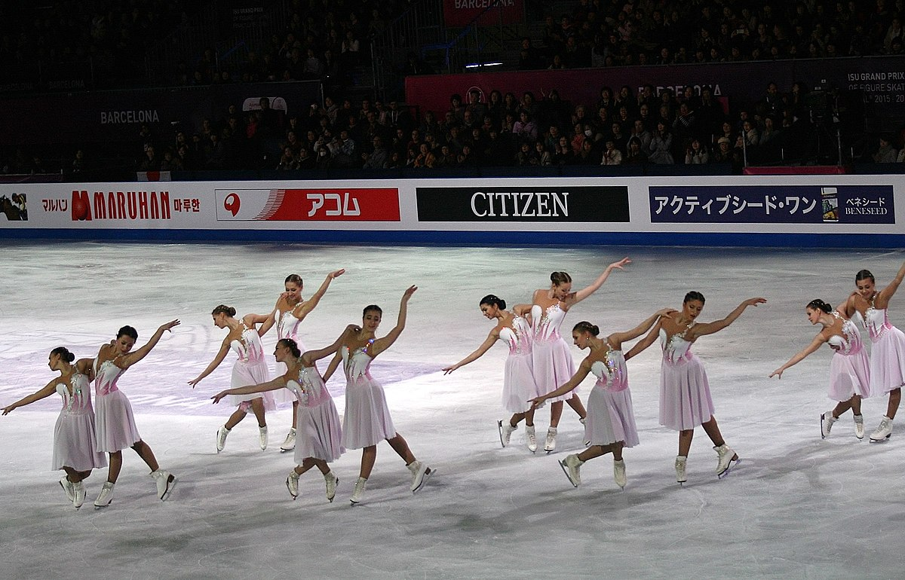
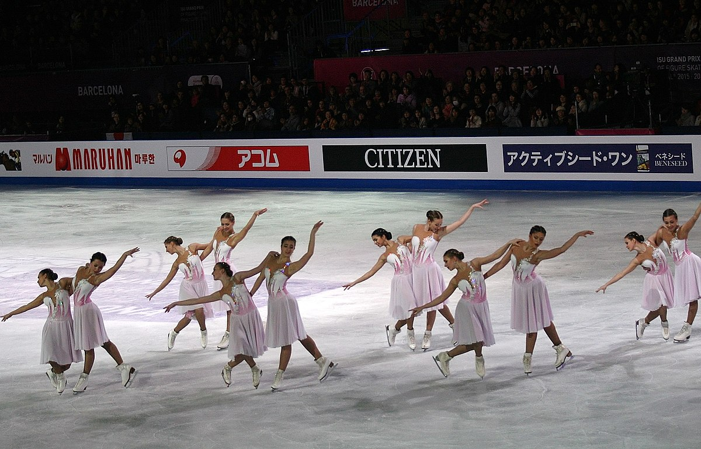

Muodostelmaluistelu on Yhdysvalloista lähtöisin oleva taitoluistelun alalaji. Laji on luotu 1970-luvulla ja Suomeen se rantautui 1980-luvulla, lajin Suomeen toi Jane Erkko.
Jäällä luistelee kerrallaan 12-24 luistelijaa otteessa ja ilman, muodostaen erilaisia arvosteltavia kuvioita.
Muodostelmaluistelu ei ole vielä olympialaji, mutta sen eteen on tehty ja tehdään koko ajan kovasti töitä. Suomeen on lisätty uusi sarja, Elite 12-seniorisarja. Nimensä mukaan tässä sarjassa jäällä nähdään vain 12 luistelijaa kerrallaan. Tällä hetkellä Suomessa on vain yksi kyseiseen sarjaan kuuluva joukkue, Lumineers.